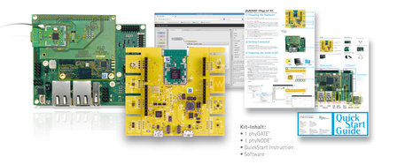

IoT Enablement Kit
The PHYTEC IoT Enablement Kit provides one of the industry’s first platforms into the newest technologies in the evolving world of IoT (Internet of Things). The Kit enables wireless data acquisition via 6LoWPAN as well as IoT network and configuration with open source software tools.
|
|  |
|
Main kit hardware contens include:
a phyNODE®KW2xD “edge node” Sensor Carrier Board that communicates via 6LoWPAN (Low power Wireless Personal Area Network). The phyNODE offers up to 7 sensors, including a magnetometer, an accelerometer, as well as a temperature and humidity sensor
a phyWAVE-KW2xD RF module, solder-connected to the phyNODE, populated with a Freescale KW2xD ARM Cortex-M4 wireless MCU running the open source RIOT IoT operating system
a phyBOARD®-Wega AM335x, mounted with a Radio Module Expansion Board to which a phyWAVE-CC2520 RF module is solder-connected. This hardware combination functions as a “phyGATE®” Gateway. This Gateway receives 6LoWPAN data from the phyNODE and can store IoT data locally, or process and transmit data to an external cloud service
The phyGATE also runs the following software:
node.js, which allows for rapid and scalable network application
development
Node-RED visual coding tools, which are built on node.js and enable easy configuration and processing of phyNODE sensor data, including integration of Cloud services
AngularJS, an open-source JavaScript web application frame work maintained by Google that offers responsive visualization based on Bootstrap and node.js
This software set demonstrates the efficiency of advanced visualization tools that can be used on multiple devices, including dynamic HTML adjustment of container width layouts for smartphones, tablets and desktop computers.
|
Specification
| Feature |
Details |
|
Module |
phyCORE-AM3354 |
|
Operating System |
Linux |
|
SOM Mounting |
Soldered (DSC) |
|
CPU |
AM3354 |
|
Processor Speed |
800 MHz |
|
Memory |
NAND Flash: 128 MB
DDR3: 256 MB
EEPROM: 4 kB |
|
CAN |
(1) CAN |
|
Serial |
(2) RS232 |
|
Ethernet (Mbit/s) |
(2) Ethernet 10/100 Mbit/s |
|
USB |
(1) USB Host (Standard-A Connector)
(1) USB-OTG (Micro-AB Connector) |
|
Mass Memory |
μSD Card Slot |
|
Expansion Bus |
UART 0, SPI 0, I2C 0, JTAG,
MMC 2, UART 2, UART 3,
GPIOs, Interrupt, Reset,
Analog Inputs |
|
RTC |
Goldcap for module RTC |
|
Temperature |
0°C to 70°C |
|
Dimensions |
100 x 72 mm (pico-ITX Format) |
|
WiFi Adapter |
phyWAVE-CC2520 |
|
Software |
Node-RED |
|
Kit-Contents |
PB-00802-010C: phyBOARD®-Wega AM3354, PN-00201-A-001: phyNODE®-KW2xD Sensor Carrier Board, Knopfzelle PEB-PWA-A-004: phyWAVE®-CC2520 Expantion Adapter with preprogrammed SDcard containing Linux image, Quickstart, Node-RED HowTo |
|